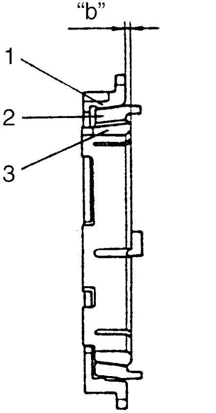

5B
| Gear and Synchronizer Ring Inspection |
Gear
Check chamfered teeth of gear for damage and excessive wear, and replace it if necessary.
Synchronizer Ring
•Check clearance “a” between synchronizer ring (2) and gear (1) while lightly pushing synchronizer ring by hand, and also check chamfered tooth of synchronizer outer ring. Replace it with new one if necessary.

 •Install synchronizer outer ring (1), inner ring (3) and the cone (2) together and then measure step difference between outer ring and inner ring. And also check each chamfered tooth of synchronizer ring and replace it with new one, if necessary.
•Install synchronizer outer ring (1), inner ring (3) and the cone (2) together and then measure step difference between outer ring and inner ring. And also check each chamfered tooth of synchronizer ring and replace it with new one, if necessary.
•Check clearance “a” between synchronizer inner ring (2) and gear (1) as well as clearance “b” between synchronizer outer ring (4) and gear respectively.
If measured value “a” or “b”, whichever is smaller, is out of specifications, replace new synchronizer inner ring, synchronizer center cone (3), synchronizer outer ring and/or gear. And also check each chamfered tooth of synchronizer ring and replace it with new one, if necessary.
Clearance “a” between synchronizer ring and gear (4th, 5th, 6th and reverse)
Standard: 1.0 – 1.5 mm (0.040 – 0.059 in.)
Limit: 0.7 mm (0.027 in.)
 "Expand image")
Difference between synchronizer outer ring and inner ring (3rd)
Standard “b”: 0.95 – 1.25 mm (0.038 – 0.049 in.)
Limit “b”: 0.48 mm (0.019 in.)

 "Expand image")
If measured value “a” or “b”, whichever is smaller, is out of specifications, replace new synchronizer inner ring, synchronizer center cone (3), synchronizer outer ring and/or gear. And also check each chamfered tooth of synchronizer ring and replace it with new one, if necessary.
Clearance “a” between synchronizer inner ring and gear, or clearance “b” between synchronizer outer ring and gear, whichever is smaller (1st and 2nd)
Standard: 0.75 – 1.65 mm (0.030 – 0.064 in.)
Limit: 0.38 mm (0.015 in.)
 "Expand image")
| 5. | Feeler gauge |